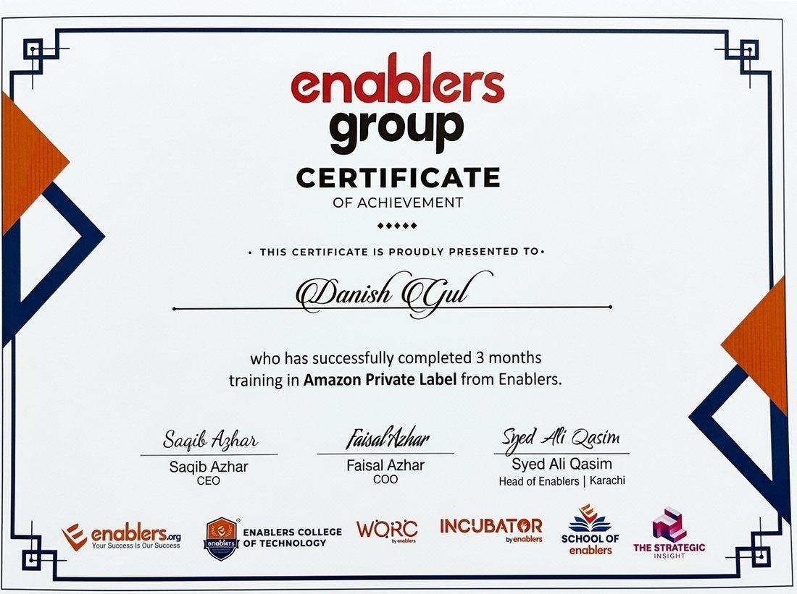

Enablers Group · Sede de Karachi
Capacitación en Amazon Private Label
- Lote 29
- Capacitación de 3 meses
- Certificado de logro
- Graduación: 21 de agosto de 2026
Lo que aprendí
- La mentalidad y el modelo de negocio de Amazon Private Label, y cómo abrir una cuenta de vendedor
- Búsqueda y validación de productos, con herramientas como Helium 10, Jungle Scout y Viral Launch
- Revisar patentes antes de pedir, y entender márgenes y tarifas de Amazon (FBA, referencia y almacenamiento)
- Mejorar un producto con una propuesta única de venta, valor añadido y mejor contenido
- Búsqueda de proveedores y evaluación de muestras frente a las de la competencia
- Análisis de reseñas negativas y de competidores con Helium 10 Review Insights, Keepa y Data Dive
- Investigación de palabras clave y los principales tipos de lanzamiento: convencional, smart, rápido y por calendario
Ya tenía experiencia práctica de un lanzamiento real de producto. Hice esta capacitación para mejorar esa experiencia con aprendizaje estructurado, porque creo que el aprendizaje nunca debe detenerse.